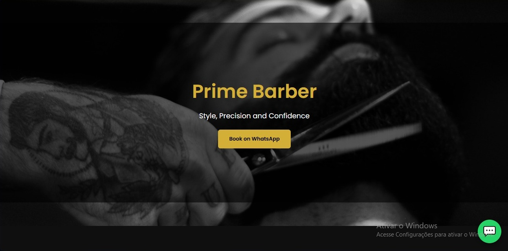
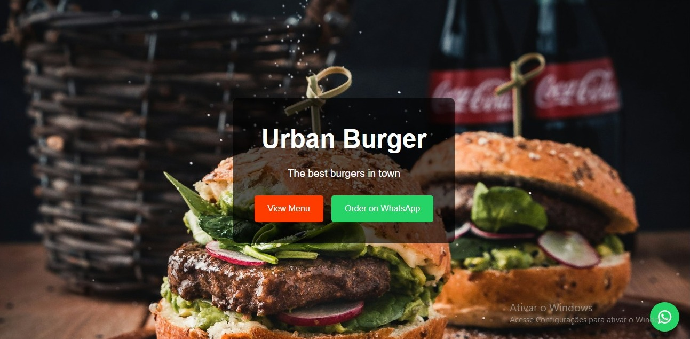

Transformamos ideias em experiências digitais.
Desenvolvemos sites modernos, rápidos e responsivos para fortalecer sua presença digital e apresentar seu negócio ao mundo.
Soluções focadas em apresentar seu negócio com excelência.
Desenvolvemos interfaces modernas e otimizadas para converter visitantes em clientes, sem promessas irrealistas de sistemas complexos ou banco de dados.
Landing Pages
Páginas únicas de alta conversão para produtos, serviços ou campanhas específicas. Foco total em clareza, velocidade e chamadas para ação.
- Alta Taxa de Retenção
- Integração com WhatsApp/Links
Sites Institucionais
Presença corporativa completa para consolidar a autoridade da sua marca. Apresentação detalhada da empresa, serviços, história e contatos.
- Múltiplas Seções/Páginas
- Arquitetura de Informação Limpa
Profissionais & Negócios
Páginas sob medida para médicos, advogados, arquitetos, consultores e pequenas empresas locais se posicionarem de forma profissional na internet.
- Transmissão de Credibilidade
- Apresentação de Portfólio/Serviços
Design Responsivo
Garantia de visualização perfeita em qualquer dispositivo: smartphones, tablets e monitores desktop. Navegação fluida e sem quebras.
- Conceito Mobile-First
- Adaptação a Telas de Qualquer Tamanho
Manutenção & Ajustes
Suporte contínuo para manter seu site atualizado, rápido e seguro. Alterações de textos, substituição de imagens e otimizações técnicas.
- Atualização de Conteúdo
- Otimização de Performance Visual
Foco no Desenvolvimento Web
Trabalhamos exclusivamente na criação de sites estáticos institucionais e páginas de vendas de altíssima qualidade. Não desenvolvemos sistemas complexos, painéis administrativos ou bancos de dados backend.
// Garantia de entrega ágil e sem complicações
Diferenciais que garantem resultados
Design Personalizado
Projetos criados do zero para refletir a essência e os objetivos específicos do seu negócio.
Layout Responsivo
Adaptação perfeita e testada para celulares, tablets e computadores de alta resolução.
Código Organizado
Desenvolvimento estruturado, leve e rápido, otimizado para navegadores e mecanismos de busca.
Comunicação Transparente
Alinhamento constante durante todo o processo de criação até a entrega final no ar.
Projetos e Conceitos Visuais
Abaixo apresentamos exemplos de estruturas digitais desenvolvidas como modelos conceituais para demonstração de capacidade técnica.

ArchStudio Architecture
Layout minimalista focado na exibição em alta definição de projetos de arquitetura e design.

Nexa Finance Advisory
Estrutura com alta densidade de informação limpa e direcionamento direto para agendamento.
Compromisso com a Excelência Digital
“A Vertrix Technology desenvolve experiências web com foco em design, funcionalidade e responsividade. Nosso objetivo é ajudar empresas e profissionais a apresentarem seus negócios com mais clareza, credibilidade e profissionalismo no ambiente digital.”
Precisão
Alinhamentos rigorosos e atenção aos detalhes em cada elemento.
Qualidade
Padrões visuais modernos sem comprometer a velocidade de carregamento.
Nossos Pilares de Trabalho
- 01 Foco no Cliente: Entendemos seu objetivo antes de escrever qualquer linha de código.
- 02 Simplicidade Sofisticada: Menos poluição visual, mais clareza na mensagem.
- 03 Entregas Pontuais: Cronogramas respeitados do início até o lançamento final.
Como funciona nosso processo
Quatro etapas simples para transformar sua presença na internet.
Entendimento
Alinhamento inicial dos objetivos do negócio, público-alvo, referências visuais e conteúdo necessário.
Planejamento
Definição do layout, hierarquia das informações, posicionamento dos elementos e fluxo do visitante.
Desenvolvimento
Construção do código responsivo HTML/CSS/JS limpo, otimização de imagens e ajustes de acessibilidade.
Publicação
Testes em múltiplos navegadores e dispositivos, lançamento oficial no servidor e orientações finais.
Seu próximo projeto começa aqui.
Vamos criar uma presença digital à altura do seu negócio?
Falar com a VertrixCanais de Comunicação
Escolha a melhor forma de entrar em contato conosco.
Atendimento rápido e direto para orçamentos.
Enviar mensagemPara propostas formais e dúvidas detalhadas.
Em manutençãoAtendimento Digital
Atendemos empresas e profissionais de todo o Brasil.
100% Remoto & Ágil